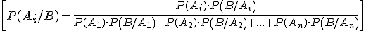
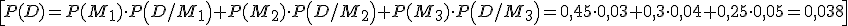

Teorema de Bayes
Sea A1, A2,…,An un sistema completo de sucesos con P(Ai) ≠ 0, i = 1, 2,…,n.
Sea B Sea B otro suceso del que sabemos P(B/Ai), i = 1, 2,…,n.
Entonces:

Ejemplo 1: 3 máquinas, M1, M2 y M3, producen 45%, 30% y 25%, respectivamente, del total de piezas producida en una fábrica. Los porcentajes de piezas defectuosas de estas fábricas son 3%, 4% y 5%, respectivamente.
- a) Si elegimos una pieza al azar, calcula la probabilidad de que sea defectuosa.
- b) Supongamos que elegimos una pieza al azar y es defectuosa. Calcula la probabilidad de que provenga de M2.
Ejemplo 2. En una factoría, hay tres robots A, B y C que sueldan piezas. El 15% de las piezas son soldadas por el robot A, el 20% por el robot B y el 65% por el C. Se sabe que la probabilidad de encontrar una pieza defectuosa soldada por el robot A es 0,02, 0,03 si la ha soldado el B y 0,01 si la ha soldado el C.
- a) Si elegimos una pieza aleatoriamente, averigua la probabilidad de que sea defectuosa.
- b) Si elegimos una pieza al azar, averigua la probabilidad de que, sabiendo que es defectuosa, haya sido soldada por el robot A.
\[a)P(D)=P(A)\cdot P\left( D/A \right)+P(B)\cdot P\left( D/B \right)+P(C)\cdot P\left( D/C \right)=0,15\cdot 0,02+0,2\cdot 0,03+0,65\cdot 0,01=0,0155\]
\[b)P(A/D)=\frac{P(A)\cdot P\left( D/A \right)}{P(A)\cdot P\left( D/A \right)+P(B)\cdot P\left( D/B \right)+P(C)\cdot P\left( D/C \right)}=\frac{0,15\cdot 0,02}{0,0155}=0,1935\]
Obra publicada con Licencia Creative Commons Reconocimiento No comercial Compartir igual 3.0